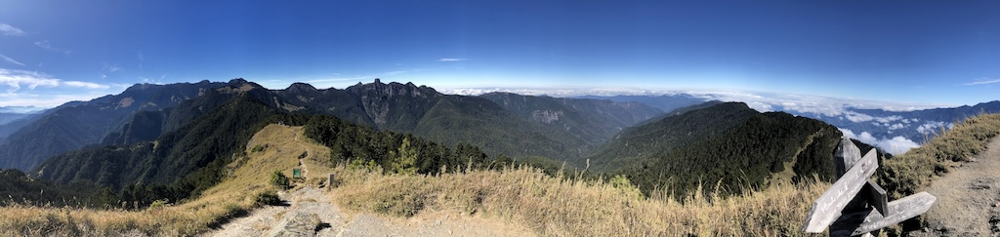
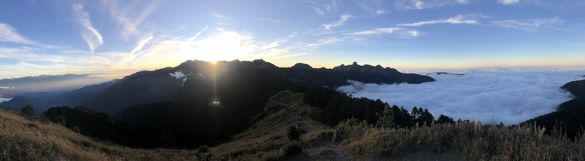
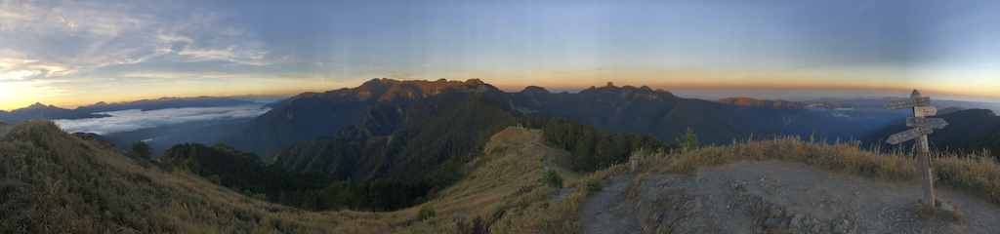
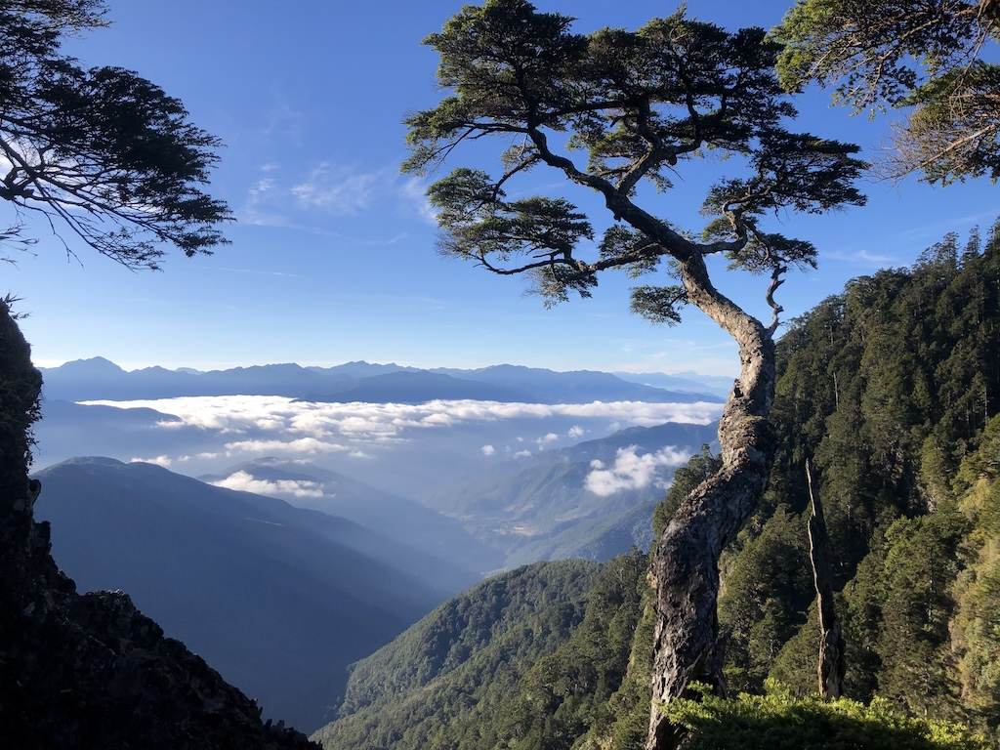
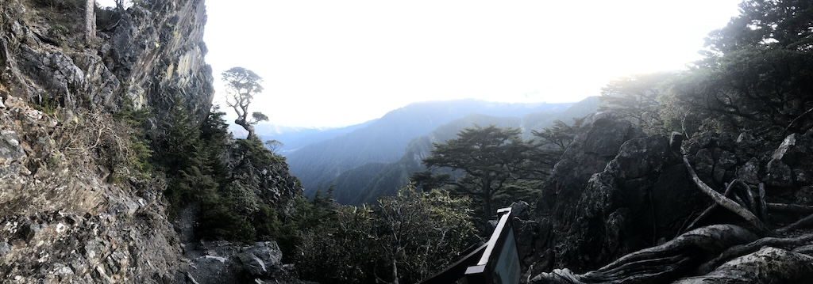
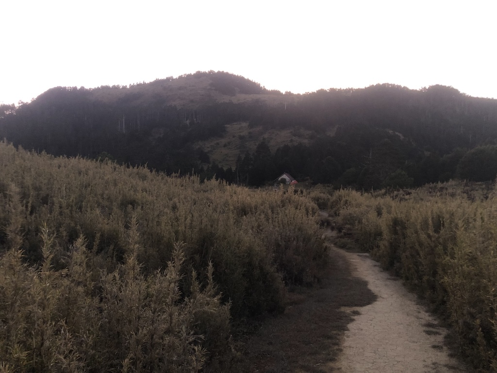
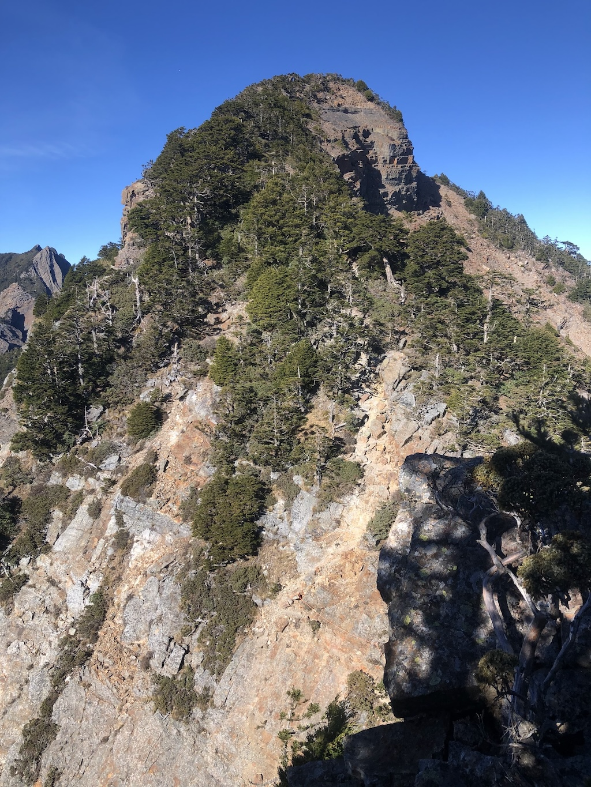
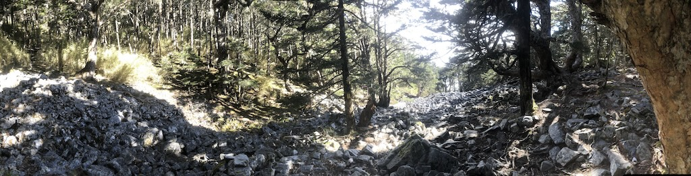
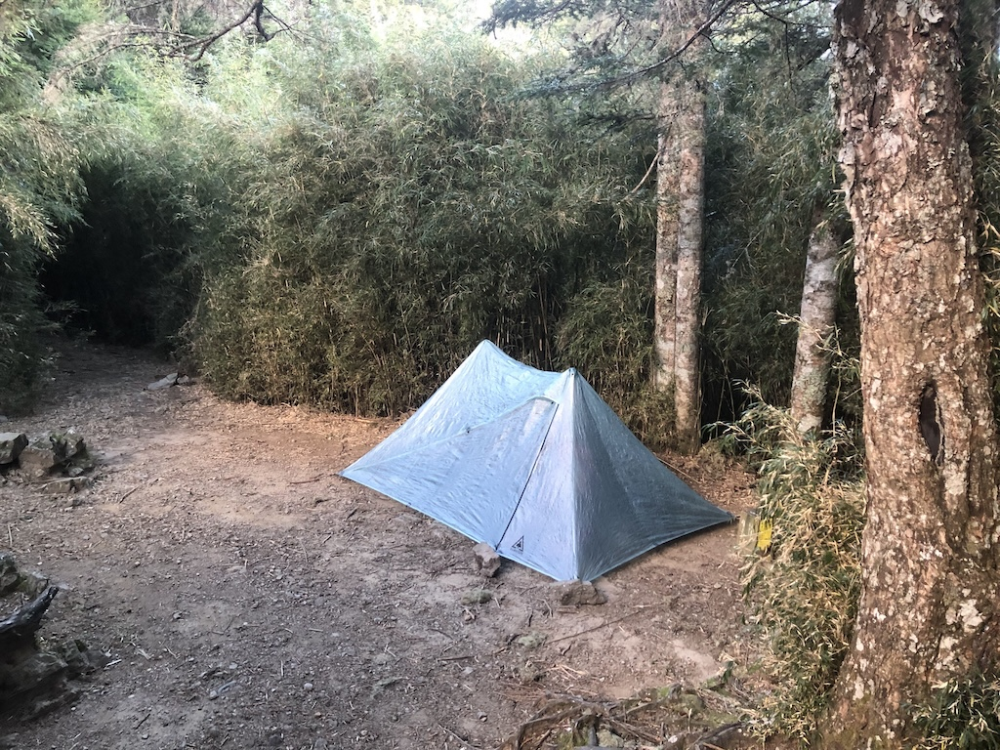
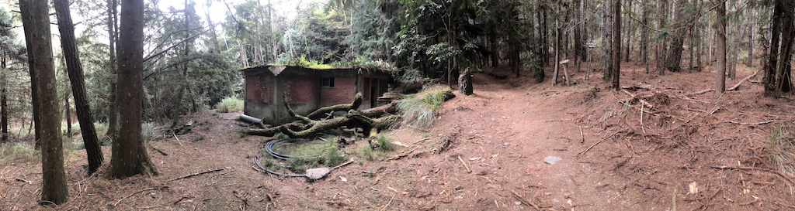

武陵四秀
記錄
-
D0
2024-12-09出發前先去倒垃圾，倒完垃圾後又解開背包檢查一次，強迫症上身一覽無遺。
-
南港轉運站
10:20在南港轉運站搭上客運，前往宜蘭轉運站。
-
宜蘭轉運站
11:20抵達宜蘭轉運站。到全家買了豆漿、豆皮壽司跟青檸雞肉手捲當午餐。雞肉手捲不好吃。另外加買兩個素肉鬆三角飯糰當晚餐。12:40 搭上客運，人不多，所以直接背包背上車。有兩個長髮女生看起來也要去爬山，背了高顏值的登山包（HMG ?），比我晚下車。15:05 到南山村，這次有點想買個熱饅頭包子，不過最後覺得還要算零錢很麻煩，放棄。
-
武陵站
16:1016:10 在武陵站下車（香菇橋的下一站），武陵客棧就在旁邊。聽黃先生（？）介紹完環境跟隔日的接駁細節後，我就躲進房間裡放空了。走廊上放了幾本灌藍高手，後來靠這幾本漫畫摸魚到晚上八點半左右。忍到 17:00 左右終於把兩個飯糰吃掉，一度想加點客棧的泡麵，不過一樣因為零錢的重量打退堂鼓。我一個人睡一個兩人小空間，所以有兩塊被子加兩個枕頭，雖然氣溫比較低，但也不覺得冷，只是左眼照例痛了起來，看來還是得想辦法處理（上山後過夜時偶有異物感，但已不痛了）。
-
D1
2024-12-10 -
武陵客棧
04:00斷斷續續睡了一些後起床收拾東西，然後到外頭去蒸兩個包子配豆漿。這時來了兩隻小貓，一黑一花，一直跟著我…的肉包。直到我吃完後牠們才放棄，小黑貓轉而去抓我背包的側袋。按計劃裝了五公升的水（水瓶 750 + evernew 1500水袋 x 2 + Seeker 1250）…重重的，最後到新達營地時才喝完（如同計劃：兩天各兩公升，晚餐跟早餐各半公升）。
-
武陵客棧
05:00搭上接駁車，是台五人座貨車。路上跟黃先生隨便亂聊，說他明年想去爬大霸尖山。經過農場大門時果然還有人值班收票。
-
武陵山莊
05:15在武陵山莊下車後，黃先生幫我拍了一張照片以備不時之需。接著到武陵山莊內上廁所。大腿稍微活動一下就摸黑簽到開始行程。在桃山岔路上遇上一個輕裝登山客，在之字陡上的路段一直看到他的頭燈，不過後來就沒再碰上了。經過工寮時因為太暗就沒拍照，決定下山時再繞進來拍幾張。之後一路上升，偶有風景，偶有平地，但沒有危險地形。
-
桃山
11:47 從桃山看可麗露山。 走到桃山三角點。遇到一對同住武陵客棧的男女，他們正準備前往喀拉業，後來花了四個多小時來回。我望了一眼通往喀拉業的陡坡，挺抖，暗自想著隔日還是等天亮再開始走好了。
-
桃山營地
12:24拍完照後走到山屋，遇到一個保育志工跟協作。跟協作喬好今晚的營地，就在山屋外的箭竹林內，雖然還有條小徑通往更深處，但志工說不會有人走過去了。桃山山屋訊號最強處在廁所前，需要挨著屎尿味傳訊息。
 搭完帳篷後又走回桃山拍照，日落時的山景果然有些不同。 回到營地後，聽到協作打電話跟其中一個隊伍確認抵達山屋的時間（算時間開始準備他們的晚餐），志工跟協作研究是哪一個隊伍，因為協作只收到兩人的訂單，但是志工手上的名單是還有一個五人隊未到。這裡就稱他們為大哥隊，因為是兩個大哥。大哥隊原本有五人，後來有三人臨時有事取消，所以才只有兩人餐。
-
晚餐
17:00開始弄晚餐，今天吃一包 montbell 的石鍋拌飯乾燥飯，味道普通，不過這個鋁箔袋還要負責之後兩晚的泡麵容器。吃完泡飯照計劃泡了美祿加乳清蛋白，這是第一次嚐試，可惜只用一個容器煮水再倒入粉沫不太理想，原因是蛋白粉碰到水就結塊，最後只能一塊塊送進嘴裡，沒辦法照原想法用喝的。不過因為沒有油，清理容易這點倒是跟設想的一樣。
睡前志工來確認睡袋的溫標，對於我不是用睡袋，且說不清溫標這件事有些擔心，最後說雖然山屋是滿的，晚上如果太冷可以幫忙喬個位子出來。晚上有些風但不大，睡起來其實也不冷，月亮很亮，直接透過初次登場的 X-Mid Pro 1 DCF 帳篷。
-
D2
2024-12-11 -
桃山營地
05:00起床後吃了蜂蜜蛋糕跟一杯咖啡。晚上也是斷斷續續的睡，跟以前比起來現在比較容易睡著了。最後按計劃只留下過夜裝備、岩盔跟一部分水。隨身帶一公升多的水、所有的食物、雨衣褲等。雖然已不是重裝，但也稱不上輕裝。
-
桃山
06:30 看日出。 到桃山時有一些人等著拍日出，我也跟著拍了些，直到太陽升起才往喀拉業移動。路上遇到大哥隊，他們挺好奇我為什麼不是輕裝出發，我說也沒帶什麼，就一些必要的東西。
-
喀拉業山
09:05 往喀拉業山的路上。 到喀拉業路上共遇到六人（大哥隊兩人、一個大姊、兩個聊 world gym、一個 06:00 就出發），我跟大哥隊走比較慢，他們在詩崙山幫我拍了照，後來也在喀拉業小聊了一下。
-
桃山營地
12:25最後比大哥隊晚了一些回到桃山營地，開始午餐跟拔營。在這裡覺得 MUJI 的火龍果乾吃起來很麻煩，因為整包是結成一塊，如果不用手拿很難分開，但是我又不想洗手（要洗就要用濕紙巾），結果最後只吃了兩三片，其它全掉地上變垃圾了。一度掙扎要不要用水洗一下繼續吃，後來放棄全丟垃圾袋（萬一肚子痛就難走了）。
13:24 大哥隊出發時我們互道新達山屋再見，我晚了幾分鐘也跟著出發。過完第一段下坡就開始覺得累了，之後有不少拉繩上攀的地形，從等高線上看不出來，但是一段接著一段，最後就進入體力透支的裝態：一點爬坡就喘很久，也開始沒有食慾（導致當日的花生巧克力還剩一些被帶回家，看來花生巧克力雖然熱量高，一天一包還是太噁心）。
-
三叉營地
15:57終於抵達三叉路，跟估算時間差不多，但是覺得很累，於是就地休息二十五分鐘，休息時也沒什麼食欲，只喝了些水。過了池有登山口後，頭上傳來一些動靜，舉頭看到三隻黃喉貂在峭壁邊飛速穿行，可惜手速不夠快拍不到。
 池有名樹。 三叉路到新達山屋之間雖然難度稍減，但因為體力下滑所以走來倍感疲倦，只在池有名樹隨意拍個一兩張照片又繼續前進，最後一個下坡隱約看到水池的倒影時才鬆了一口氣。
-
新達營地
17:40 新達營地。 終於抵達新達山屋。進山屋跟山友聊了兩句，我說去完喀拉業再走過來很硬，大哥隊說：「你終於覺得硬了喔！」。今晚加上我共有五個人在新達山屋（另加一名協作，不過協作在外頭睡帳篷），大哥隊說我可以直接睡山屋，不過我說要在外面試裝備，如果冷到受不了會進山屋取暖。
新達山屋訊號最好的地方在空曠處、離山屋超過十公尺、協作帳篷處。在山屋正前方的空地上紥營，三邊被箭竹包圍，地上鋪滿乾箭竹。搭完帳就開始晚餐，由於體力透支沒什麼食欲，不過為了隔日的品田山，還是吃掉肉臊泡麵。泡麵果然是個連沒味口時都能吃下去的東西。吃完後擔心晚上熱量不夠太冷，準備半夜餓的話再吃當日配給的鳳梨酥（最後沒吃）。
睡的時候心跳維持破百（自覺有），一直擔心出現高山症症狀。月亮依舊穿透帳篷，我依舊睡得斷斷續續，沒什麼風，倒也不怎麼冷。過午夜後感覺心跳開始變慢，身體也沒那麼疲倦了。
今天是計劃中最硬的一天，隔天的行程比較短，於是決定睡到天亮再說。另外下午因為體力透支，覺得 D4 要一大早摸黑走回三叉路口有些危險，動了隔天直接改紥營在三叉營地的念頭。
-
D3
2024-12-12 -
新達營地
07:53因為今天行程不趕，所以躺到天亮才起床，感覺體力恢愎了不少。因為決定從品田山回來後直接到三叉營地，晚上就在三叉營地過夜，所以吃完早餐就開始拔營，並把過夜裝備跟部分食物收到山屋中。有兩隻黃喉貂從山屋後竄出，不過我手速慢還是沒能拍到。早餐是前晚留下的蛋白粉跟美祿，加上今天的咖啡與蛋糕，看來又吃得下了。
07:53 營地只剩下我跟一個協作。出發前往品田。開始時有點吃力，不過走了一段後似乎就恢愎正常了。在大草原段碰到大哥隊從品田山回來。
-
品田山前峰
09:04 品田 V 斷前。 準備開始這次行程的大魔王。把登山杖放在路邊、戴上岩盔後開始往下移動。最困難的一段是拉繩下攀幾近垂直的路段，不過因為山壁由板狀岩石的斷面組成，所以沒下雨的話踩起來不會太困難。過完 v 斷後…沒想到還有幾百公尺才到三角點。
-
品田山
09:47因為偶有大風，所以拍了一些照片外帶歡呼幾聲「帥暴了」就開始往回走。
-
新達營地
11:19回到新達山屋，不太累且時間充裕，所以慢慢吃著行動糧接著慢慢打包，另外補水到 2.5 公升。這時開始起霧，不過往三叉營地的路上雖然偶有雲霧卻也不影響能見度。經過一晚的休息，到池有山登山口前的路線走來似乎也沒那麼困難了。
-
池有山
14:02池友山上看可麗露山。  傳說中的石瀑。 我選擇從西邊的登山口登頂，再從東邊的石瀑回到步道。登頂後一度以為是四面白牆，不過一陣強風把雲吹開，就看到對面的大霸尖山。三角點有滿格的訊號，我也在這跟妮娜報了平安。
-
三叉營地
14:40 三叉營地。 在三叉路旁還有塊不錯的松針營地，事後回想應該比較避風，不過對我的帳篷來說空間稍微不足，所以移往三叉營地。有一男一女在這休息，之後也陸續有人經過。 三叉營地雖然空間可以紥個三個帳篷，但其實只有一部分比較平。
搭完帳篷後開始吃行動糧，直到原本的一對男女等到另一對男女，最後四人都離開。之後還遇過兩人大學生隊伍，說是翹課來爬山，他們一眼就認出我的帳篷，且走得較慢的一位還拿出相機來拍。另有一隊兩人輕裝經過，說他們的一個隊員在武陵農場就有高山反應開始吐了，所以留在武陵山莊。
營地除了靠箭竹的邊緣比較軟，靠近中間的部分土很硬，最後我以為營釘打不下去就用石頭壓著。結果天黑後開始起大風，沒多久帳篷的一角就被掀了。我穿了鞋出帳篷開始補救，才發現也沒多冷（約 20:00）。本來怕把釘子㪣斷，現下想好退路（用手撐著躲帳篷，一夜不睡）就用石頭把釘子打進地裡了，再把石塊壓到營釘上，後來這一個角落繼續承受大風，一夜沒倒。另一根營釘也被打進硬土裡，不過該方向風力不大。
午夜之後，風雖然還是很大，但風向變了，營地強風變少，我也開始越睡越多。
-
D4
2024-12-13 -
三叉營地
07:32天稍亮後決定起床開始收拾，畢竟還得衝出去趕客運（其實以 D3 的進度來看，多過一夜真的就是為了搭客運）。有隊伍開始經過，不過我還在帳內收拾，只看得到人影。打包完後開始吃早餐，這次懶得泡咖啡，只吃掉蛋糕，然後倒掉多餘的水。
07:32 開始懷著愉快的心情下山。路上已沒什麼景，主要是開始起雲霧了。遇上每一組正在往上爬的隊伍就會想著：「我看完美景要回家啦～」。下到登山口時遇到一人隊伍，外套還披在背包上，說是要走個 O 繞再從七卡下山，感覺是個可以嚐試的路線，不過品田山之後的斷崖要仔細評估了。猶豫一陣後決定繞去桃山瀑布看看…果然沒什麼好看，雖然我包場了。看到一隻公藍腹鷴，後來又看到一隻公的帶兩隻母的，似乎也不怎麼怕人。
 回程時繞回去看工寮。 -
武陵山莊
11:04 -
武陵農場站
12:22抵達客運站，開始跟另一對山友隨便聊，他們兩天一夜去了桃山，後來也搭車到南港轉運站。